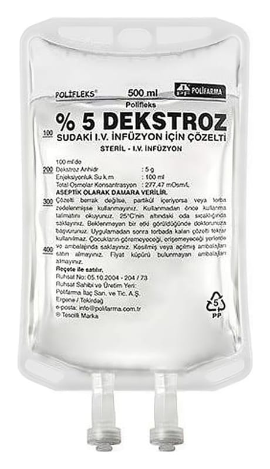

Polifleks %5 Dekstroz %0,9 Sodyum Klorür IV İnfüzyon İçin Çözelti, 250 ml Setli

Ne için kullanılır
KT · Bölüm 1POLİFLEKS %5 DEKSTROZ %0,9 SODYUM KLORÜR, vücut için yaşamsal önemi olan sodyum, klorür iyonları ile glukoz içeren damar içi yoldan kullanılan steril bir çözeltidir.
POLİFLEKS %5 DEKSTROZ %0,9 SODYUM KLORÜR; 250, 500 ve 1000 mL hacminde PVC ve PP torbalarda sunulmuştur. Setli ve setsiz iki formu bulunmaktadır.
Vücuttan kaybedilen sıvının ve tuzun yerine konmasında işe yarar. Ayrıca vücudun enerji ihtiyacının bir bölümünü de karşılar.
Vücudun susuz ve tuzsuz kalması (dehidratasyon) durumunun tedavisinde ve bu durumun oluşmasını önlemek için kullanılır. Özellikle terleme, kusma ve ameliyat vb. gibi durumlarda mide sıvılarının dışarı çekilmesi gibi nedenlerle vücuttaki klorür adlı bir maddenin kaybının, sodyum adlı maddenin kaybına eşit ya da daha fazla olduğu durumlarda, kan nakline ek olarak ayrıca sıvı verilmesi istenen
hastalarda, ameliyat öncesi ve sonrası bakımında, böbrek fonksiyonlarını başlatabilecek bir ilaç olarak tercih edilir.
POLİFLEKS %5 DEKSTROZ %0,9 SODYUM KLORÜR, konsantre formda bulunan bazı damar içi uygulamaya uygun ilaçların damar içine uygulanmadan önce seyreltilmesi amacıyla da kullanılmaktadır.